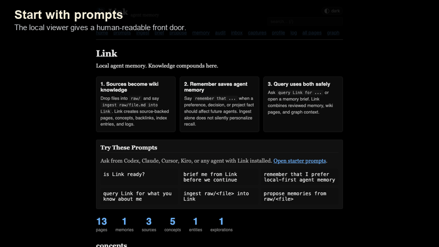
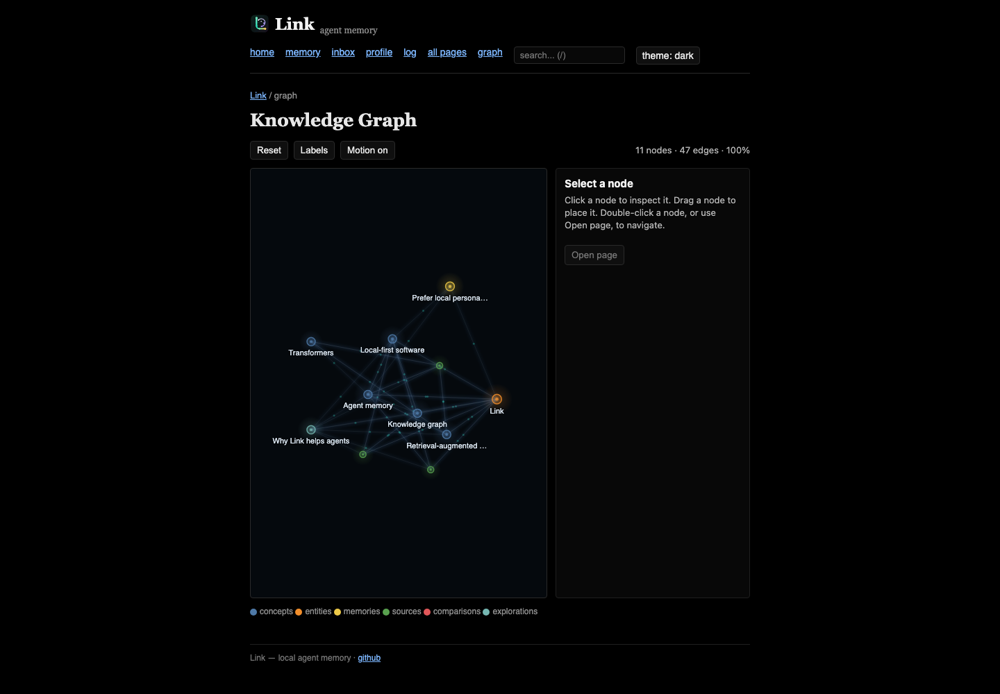

UI Tour

Daily Loop
Start from prompts
The home page gives first-run prompts an agent can act on without you memorizing file paths or command syntax.
Check ingest
The ingest view shows pending raw files, represented sources, stale ingests, safety warnings, and post-ingest checks.
Review memory
Use the memory dashboard, inbox, profile, audit, and explain views to keep recall useful instead of mysterious.
Validate after writes
Run validation from the CLI or MCP after ingest and broad repairs so dead links, missing sections, and stale graph indexes do not linger.
Graph At Scale
The graph opens as a bounded overview on large wikis. Search, filters, and focused neighborhoods can pull from the full graph data without forcing the browser to render every node at once.

Start It
link serve
# from a source checkout
python3 link.py serve link-demoThe server binds to 127.0.0.1 and is intended for local use. Do not expose it to the internet without adding your own authentication layer.